Sélecteur de lieu : avant et après
« Avant » est la production relevée avant ce polish, « après » la vraie production, déploiement 883fda5f (code 106156c38). Captures Chromium, seul moteur du banc qui rend le vrai flou, position simulée, sans iPhone réel.
Le Flash et la météo changent entre les captures : ce sont les données du moment.
La feuille sur téléphone, 390 px
Elle se pose sur le bas et couvre la barre, comme Rubriques. Plus de repère ni de punaise : la coche orange dit ce qu'on regarde, l'étoile les favoris, et « Ville par défaut » s'écrit.
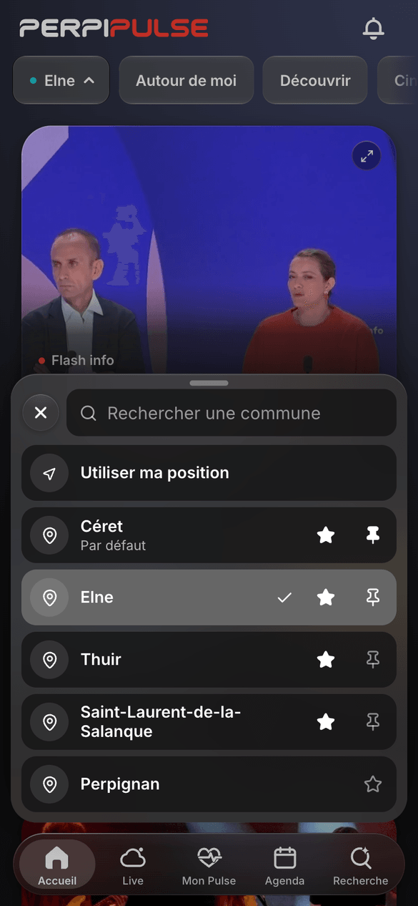

La capsule
Le nom et un triangle plein. La flèche blanche seulement quand la position GPS est lue. Plus aucun point turquoise.
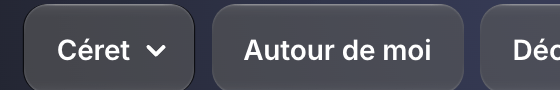
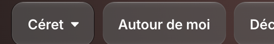
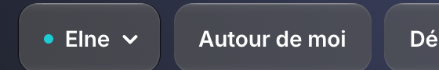
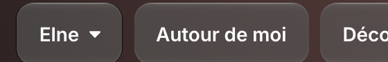
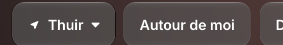
Le panneau sur ordinateur, 1 440 px
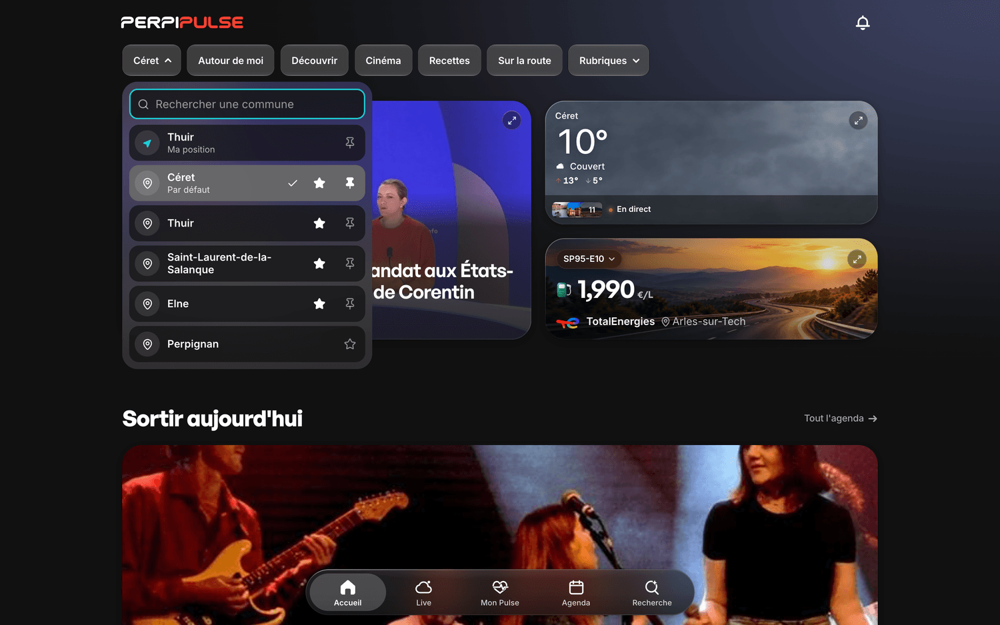

Les états, 390 px et 320 px
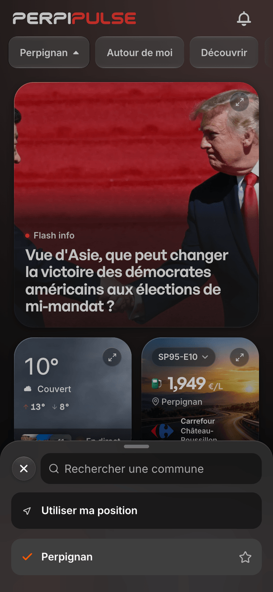
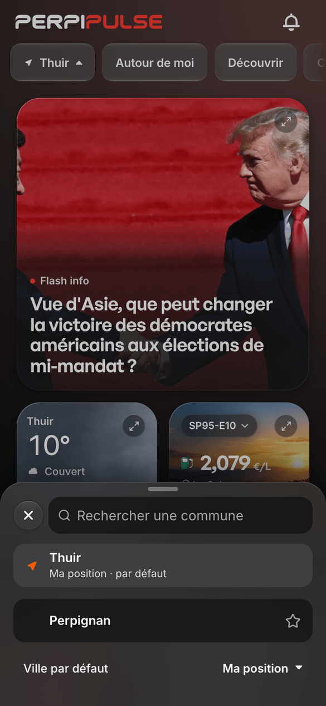

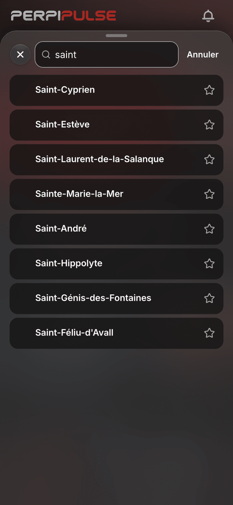
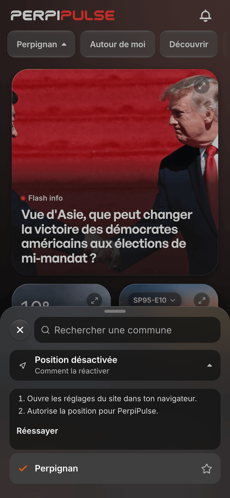
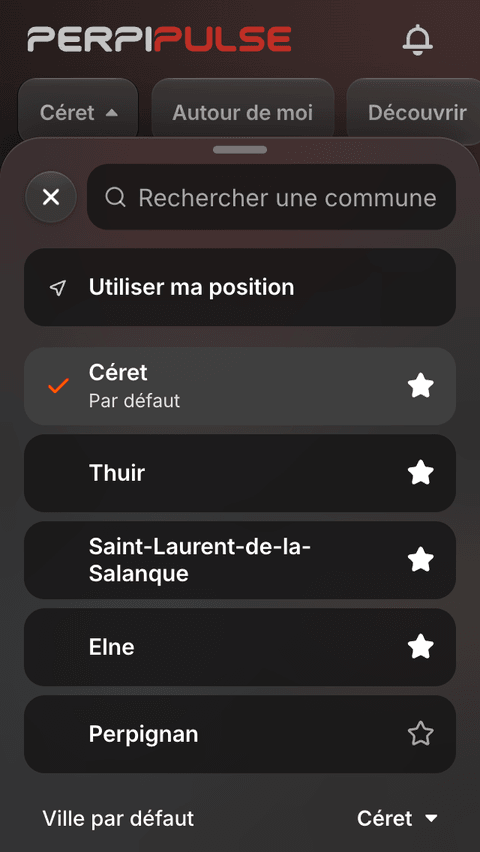
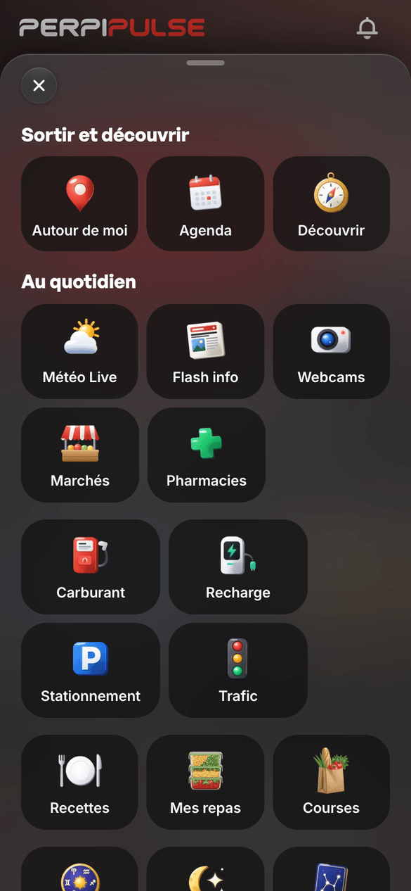